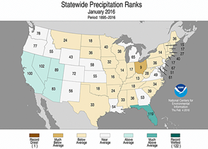
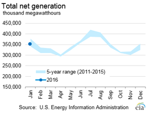
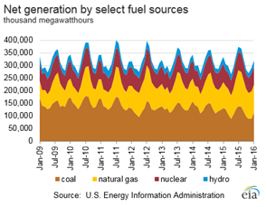
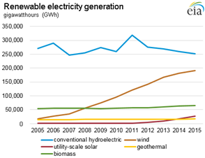

Electricity Monthly Update
With Data for January 2016 | Release Date: Mar. 24, 2016 | Next Release Date: Apr. 25, 2016
Previous Issues
Highlights: January 2016
- Average revenue per kilowatthour and retail sales volumes were lower across all sectors compared to last year.
- Wholesale natural gas and electricity prices around the country were significantly lower than in previous years.
- The price of natural gas at New York City on a $/MWh basis was above the price of Central Appalachian coal for the first time since March 2015.
Key Indicators
| January 2016 | % Change from January 2015 | |
|---|---|---|
| Total Net Generation (Thousand MWh) |
350,863 | -3.0% |
| Residential Retail Price (cents/kWh) |
12.01 | -0.7% |
| Retail Sales (Thousand MWh) |
318,075 | -2.5% |
| Heating Degree-Days | 870 | -2.8% |
| Natural Gas Price, Henry Hub ($/MMBtu) |
1.95 | -43.6% |
| Natural Gas Consumption (Mcf) |
808,451 | 8.1% |
| Coal Consumption (Thousand Tons) |
62,186 | -12.8% |
| Coal Stocks (Thousand Tons) |
189,128 | 22.2% |
| Nuclear Generation (Thousand MWh) |
72,536 | -2.3% |



Nonhydro renewable power generation widened gap over conventional hydroelectricity in 2015
 Source: U.S. Energy Information Administration, Form EIA-923 Power Plant Operations Report
Source: U.S. Energy Information Administration, Form EIA-923 Power Plant Operations ReportNotes: Annual data for 2015 are preliminary.
Nonhydroelectric renewable power generation continued to surpass conventional hydroelectric power generation in 2015. Renewable energy sources include both conventional hydroelectric power and nonhydroelectric sources (wind, geothermal, biomass, and solar).
Hydro power has traditionally been the dominant source of renewable power generation, accounting for more than three times (270,321 gigawatt hours (GWh)) as much of generation as all nonhydro renewable sources together (87,329 GWh) in 2005. Over the past decade, hydro power generation decreased by 7%, and nonhydro renewable generation increased by 242% . Nonhydro renewable generation (279,213 GWh) first exceeded hydro generation (259,367GWh) in 2014. The difference between the two sources of electricity generation expanded further in 2015 when nonhydro generation increased to 298,358 GWh, while hydro generation decreased to 251,168 GWh.
The growth in nonhydro renewable generation has been the source of renewables' increasing share of total U.S. power generation over the past 10 years. In 2005, the total generation from all renewable sources was 357,651 GWh, or 8.8% of the total U.S. power generation. In 2015, generation from all renewables stood at 549,527 GWh, or 13.4 % of total U.S. power generation, with conventional hydropower, wind, biomass, solar, and geothermal contributing 6.1%, 4.7%, 1.6%, 0.6%, and 0.4%, respectively. In contrast, between 2005 and 2015, the share of generation from fossil fuel (coal, natural gas, and petroleum) declined from 71.7% to 66.9%, while the nuclear share increased slightly from 19.3% to 19.5%.
 Source: U.S. Energy Information Administration, Form EIA-923 Power Plant Operations ReportNotes: Annual data for 2015 are preliminary.
Wind has been the dominant energy source in the expansion of nonhydro renewable power generation since 2005. Electricity generated from wind power increased 972%, from 17,811 GWh in 2005 to 190,927 GWh in 2015. The increase in wind energy accounted for 82% of the increase in total nonhydro renewable generation during this 10-year period. More recently, a second factor driving nonhydro renewable power generation has been the increase in solar generation. Between 2005 and 2015, electricity generation from solar increased 48 fold, from 550 GWh to 26,473 GWh. This increase was the fastest growth rate among all nonhydro renewable energy sources, with most of the growth occurring after 2010. Power generation from geothermal and biomass also increased during this 10-year period. Biomass increased 18.3% from 54,277 to 64,191 GWh, and geothermal increased 14.1% from 14,692 to 16,767 GWh.
Principal Contributor:
Joy Liu
(Joy.Liu@eia.gov)
End Use: January 2016
Retail rates/prices and consumption
In this section, we look at what electricity costs and how much is purchased. Charges for retail electric service are based primarily on rates approved by state regulators. However, a number of states have allowed retail marketers to compete to serve customers and these competitive retail suppliers offer electricity at a market-based price.
EIA does not directly collect retail electricity rates or prices. However, using data collected on retail sales revenues and volumes, we calculate average retail revenues per kWh as a proxy for retail rates and prices. Retail sales volumes are presented as a proxy for end-use electricity consumption.
Average revenue per kWh by state


Average revenue per kilowatthour figures decreased in 27 states and the District of Columbia and increased in 23 states in January compared to last year. Hawaii had the largest decrease for the thirteenth month in a row, down 20% from last year as lower world oil prices continue to benefit Hawaii's largely petroleum-fueled bulk power system. The next largest year-over-year declines were found in New York, down 13%, and Nevada, down 11% from last year. The largest year-over-year increase occurred in West Virginia, up 16%, followed by Washington, up 11%, and Delaware, up 9%.
Average revenues per kilowatthour and retail sales volumes were both lower in total and across all sectors in January when compared to last year. Average revenues per kilowatthour were 9.96 cents in January, down 2.2% from last year. Retail sales volumes totaled 318,075 gigawatthours (GWh), down 2.5% from last year. The Residential sector, also the most sensitive to weather, had the largest sales volume declines (-4.9%) as the warmest winter on record subdued electricity demand to some extent.
Retail sales


State retail sales volumes were mostly down in January compared to last year. 42 states and the District of Columbia, including every state east of the Mississippi River, had lower retail sales volumes, led by Delaware which was down over 15%. New Jersey (-8%), Tennessee (-7%), Indiana, and Maryland (both down 6%), had the next largest year-over-year declines. The eight states with retail sales volume increases were scattered throughout the West (and Hawaii). Hawaii had the largest increase, up nearly 4%, with Arizona close behind, up over 3%. Hawaii's increased volumes can be traced to a sustained pattern of warm, dry weather. High temperatures in Honolulu were at or above average 30 of 31 days during the month, with virtually no rainfall which is well below normal precipitation amounts. In Hilo on the Big Island, high temperatures in the high-80's set records on several days during the month.


Heating Degree Days (HDD) measure the daily variation in average temperature from a 65 degree Fahrenheit baseline, chosen as a proxy for minimum heating or cooling energy demand. HDDs fell in 22 states across the Northeast, Great Lakes and lower Midcontinent regions this January compared to last year, indicating warmer weather. The largest HDD decreases were found in the Northeast, with New Hampshire, Maine, Vermont, and New York the top four states with HDD declines between 15%-17%. HDDs increased in 28 states across the Southeast and West and the District of Columbia, indicating colder weather in these regions compared to last year. California had the largest HDD increase, up 33%, followed by Florida, up 31%, and Nevada, up 23%.
Resource Use: January 2016
Supply and fuel consumption
In this section, we look at the resources used to produce electricity. Generating units are chosen to run primarily on their operating costs, of which fuel costs account for the lion's share. Therefore, we present below, electricity generation output by fuel type and generator type. Since the generator/fuel mix of utilities varies significantly by region, we also present generation output by region.
Generation output by region

Net generation in the United States decreased 3% in January 2016 compared to the previous year. At the region-level, all regions of the country saw decreases in electricity generation compared to the previous January. The largest percent decrease from the previous January occurred in Texas (-6.8%), where temperatures returned to near average in January 2016 after the state experienced below average temperatures in January 2015. The only areas that experienced a minimal decrease in electricity generation were the Southeast region (-0.4%) and Florida (-0.3%), where each experienced temperatures that were similar to January 2015.
In January 2016, electricity generation from coal continued to show a year-over-year decrease in all regions. Natural gas generation increased in all regions of the country, except for in Texas, where electricity generation decreased due to the previously mentioned decline in residential heating due to weather conditions. Nuclear generation was down 2.3% compared to January 2015, with the largest percent decrease occurring in the Southeast region (-6.1%), where unit one at the Sequoyah nuclear plant was offline for maintenance in January 2016, whereas in the previous January, the plant operated at full capacity.
Fossil fuel consumption by region
The chart above compares coal consumption in January 2015 and January 2016 by region and shows that, like electricity generation from coal, coal consumption decreased in all regions of the country.
The second tab compares natural gas consumption by region and shows that increases in natural gas consumption from the previous January mirrored the increases in electricity generation from natural gas over the same period, including Texas, where natural gas consumption decreased compared to the prior January.
The third tab presents the change in the relative share of fossil fuel consumption by fuel type on a percentage basis, calculated using equivalent energy content (Btu). This highlights changes in the relative market shares of coal, natural gas, and petroleum. In January 2016, the share of natural gas consumption increased in all regions of the country at the expense of coal consumption compared to the previous year. In the Northeast, natural gas also increased its share at the expense of other fossil fuels, which saw a larger than usual share of fuel consumption during the previous January.
The fourth tab presents the change in coal and natural gas consumption on an energy content basis by region. The changes in total coal and natural gas consumption were similar to the changes seen in total coal and natural gas net generation in each region.
Fossil fuel prices
To gain some insight into the changing pattern of consumption of fossil fuels over the past year, we look at relative monthly average fuel prices. A common way to compare fuel prices is on an equivalent $/MMBtu basis as shown in the chart above. The average price of natural gas at Henry Hub had its first month-over-month increase since July 2015, going from $1.95/MMBtu in December 2015 to $2.35/MMBtu in January 2016. The natural gas price for New York City (Transco Zone 6 NY) saw a significant increase from the previous month, going from $1.69/MMBtu in December 2015 to $3.76/MMBtu in January 2016. This increase in New York City's natural gas price is often observed during this time of year when there is an increased demand for natural gas used for heating in an area of the country where the natural gas pipeline infrastructure is subject to significant congestion.
For the third consecutive month, the New York Harbor residual oil price decreased from the previous month, going from $5.91/MMBtu in December 2015 to $5.14/MMBtu in January 2016. Regardless, oil used as a fuel for electricity generation is almost always priced out of the market.
A fuel price comparison based on equivalent energy content ($/MMBtu) does not reflect differences in energy conversion efficiency (heat rate) among different types of generators. Gas-fired combined-cycle units tend to be more efficient than coal-fired steam units. The second tab shows coal and natural gas prices on an equivalent energy content and efficiency basis. For the thirteenth consecutive month, the price of natural gas at Henry Hub was below the price of Central Appalachian coal on a $/MWh basis. However, the spread between the two prices decreased significantly, mainly due to the large increase in the price of natural gas at Henry Hub. The price of natural gas at New York City on a $/MWh basis was above the price of Central Appalachian coal for the first time since March 2015, due to the large increase in the price of natural gas at New York City.
The conversion shown in this chart is done for illustrative purposes only. The competition between coal and natural gas to produce electricity is more complex. It involves delivered prices and emission costs, the terms of fuel supply contracts, and the workings of fuel markets.
Regional Wholesale Markets: January 2016
The United States has many regional wholesale electricity markets. Below we look at monthly and annual ranges of on-peak, daily wholesale prices at selected pricing locations and daily peak demand for selected electricity systems in the Nation. The range of daily prices and demand data is shown for the report month and for the year ending with the report month.
Prices and demand are shown for six Regional Transmission Operator (RTO) markets: ISO New England (ISO-NE), New York ISO (NYISO), PJM Interconnection (PJM), Midwest ISO (MISO), Electric Reliability Council of Texas (ERCOT), and two locations in the California ISO (CAISO). Also shown are wholesale prices at trading hubs in Louisiana (into Entergy), Southwest (Palo Verde) and Northwest (Mid-Columbia). In addition to the RTO systems, peak demand is also shown for the Southern Company, Progress Florida, Tucson Electric, and the Bonneville Power Authority (BPA). Refer to the map tabs for the locations of the electricity and natural gas pricing hubs and the electric systems for which peak demand ranges are shown.
In the second tab immediately below, we show monthly and annual ranges of on-peak, daily wholesale natural gas prices at selected pricing locations in the United States. The range of daily natural gas prices is shown for the same month and year as the electricity price range chart. Wholesale electricity prices are closely tied to wholesale natural gas prices in all but the center of the country. Therefore, one can often explain current wholesale electricity prices by looking at what is happening with natural gas prices.
Wholesale prices

Wholesale electricity and natural gas prices were much lower this January than in years' past, particularly in the Northeast. A combination of warmer-than-normal temperatures across the Northeast, additional pipeline infrastructure, and the generally well-supplied and low-priced natural gas environment led to regional prices just a fraction of what happened over the last several years. In the electricity market, peak prices for the month reached only $66/MWh in New England (ISONE), down from $110/MWh last year and $438/MWh two years ago. Peak prices in New York City (NYISO) reached only $71/MWh this year, down from $124/MWh last year and $518/MWh two years ago. In the Mid-Atlantic (PJM), peak prices reached only $46/MWh this year, down from $82/MWh and $683/MWh two years ago. Across the rest of the country, peak prices remained below $37/MWh at all other selected trading points.
The low wholesale natural gas prices this January were even more pronounced than the fall in wholesale electricity prices. Peak prices for the month reached only $7.85/MMBtu in New England (Algonquin), down from $14.37/MMBtu last year and $78/MMBtu two years ago. Peak prices in New York City (Transco Z6 NY) reached only $6.66/MMBtu this year, down from $18.11/MMBtu last year and $121/MMBtu two years ago. In the Mid-Atlantic (Tetco M-3), peak prices reached only $4.56/MMBtu this year, down from $16.70/MMBtu and $92/MMBtu two years ago. Peak prices remained below $2.85/MMBtu at the other seven selected trading points around the country, very low levels for any month much less a peak winter month which often records the highest prices and demand for the year.
Electricity system daily peak demand

{kind=link}
{kind=link}
{kind=link}
{kind=link}
{kind=link}
Electricity system daily peak demand this January was lower than last year in all regions except California (CAISO), Progress Florida, and the Bonneville Power Administration (BPA) footprint. California loads peaked during the first week of the month (though loads were low compared to other times of the year), as cool weather and heavy precipitation blanketed the state. Progress Florida's 10,764 megawatt (MW) peak demand was 18% higher than its peak last January, though winter loads are considerably lower in this region than those occurring during summer months. In BPA, daily peak demand of 9,365 MW was just 200 MW lower than its 12-month peak.